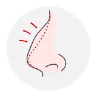
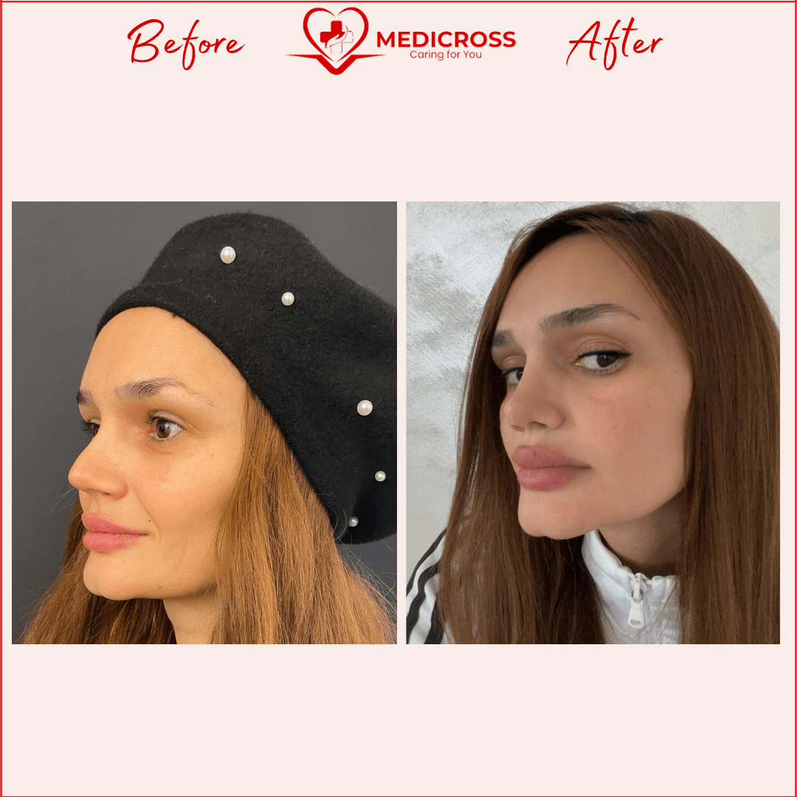
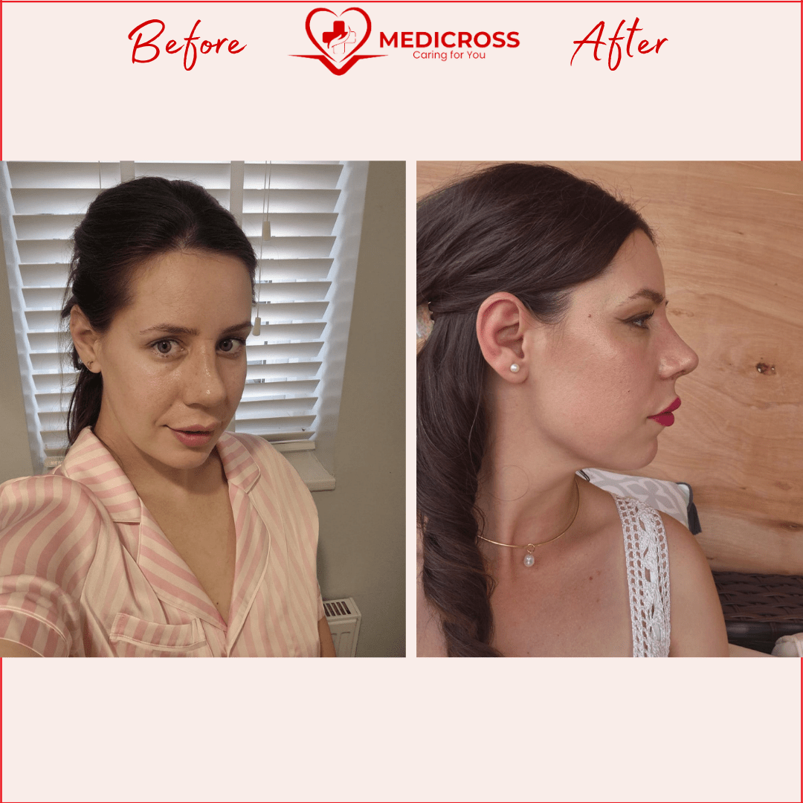
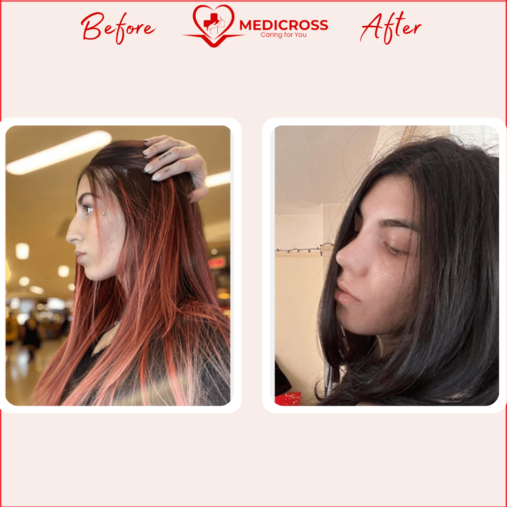
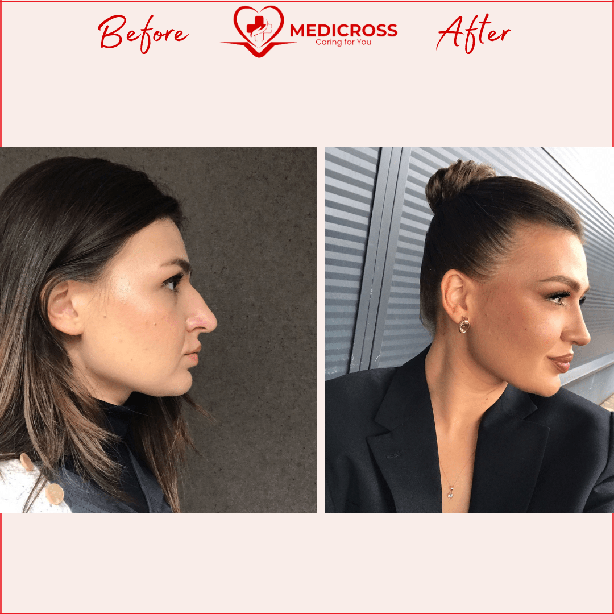
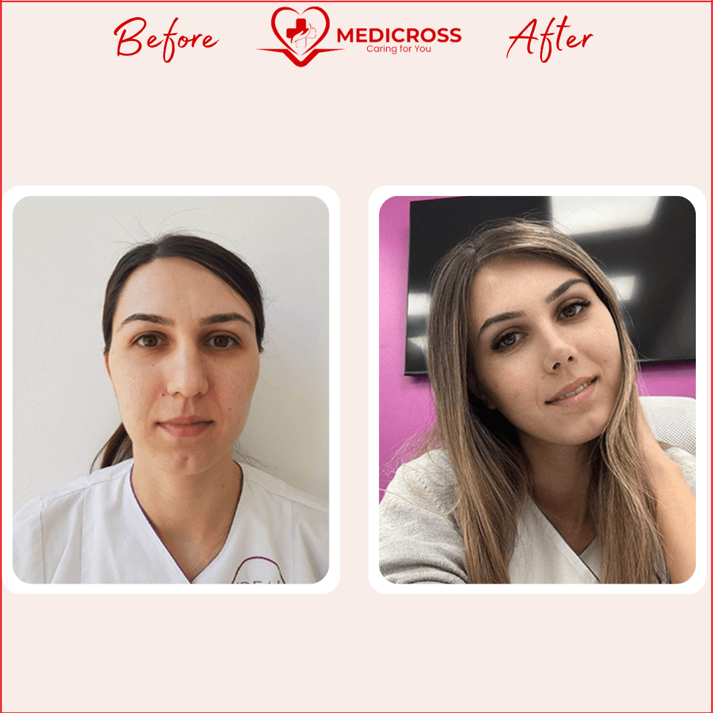
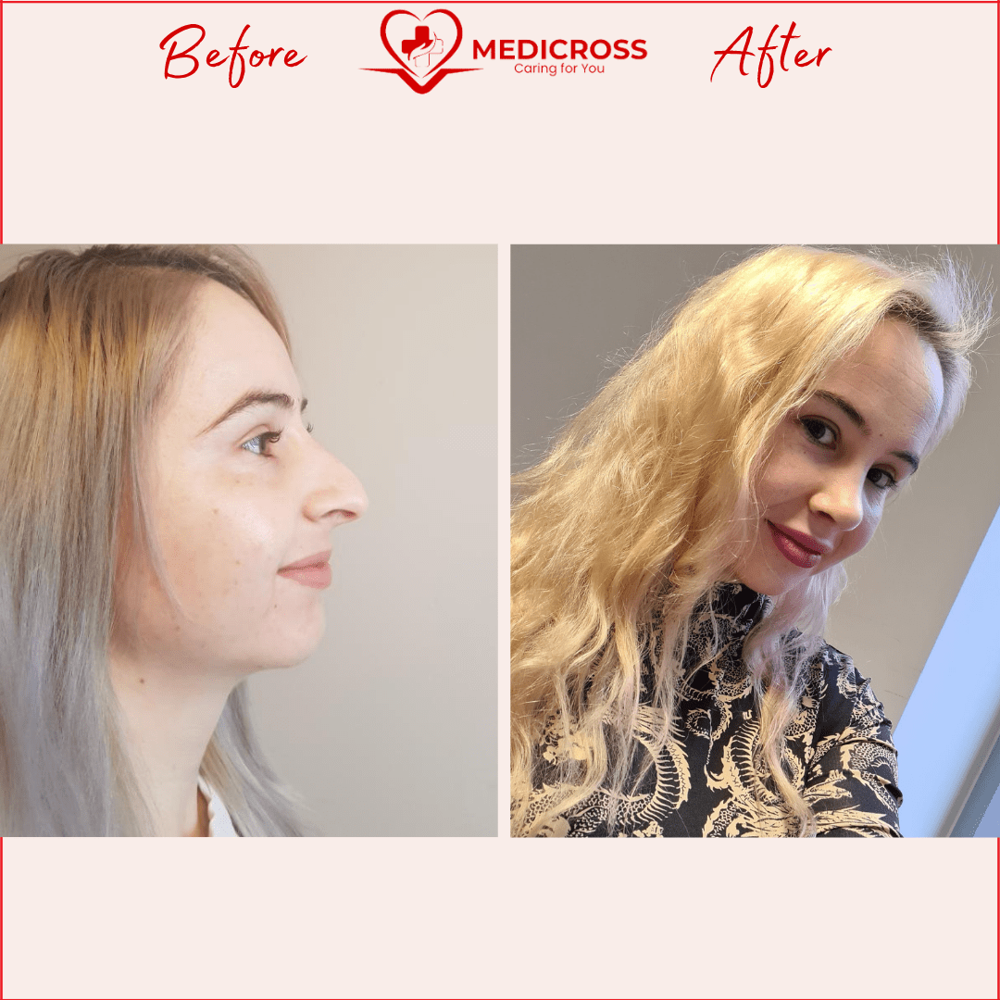
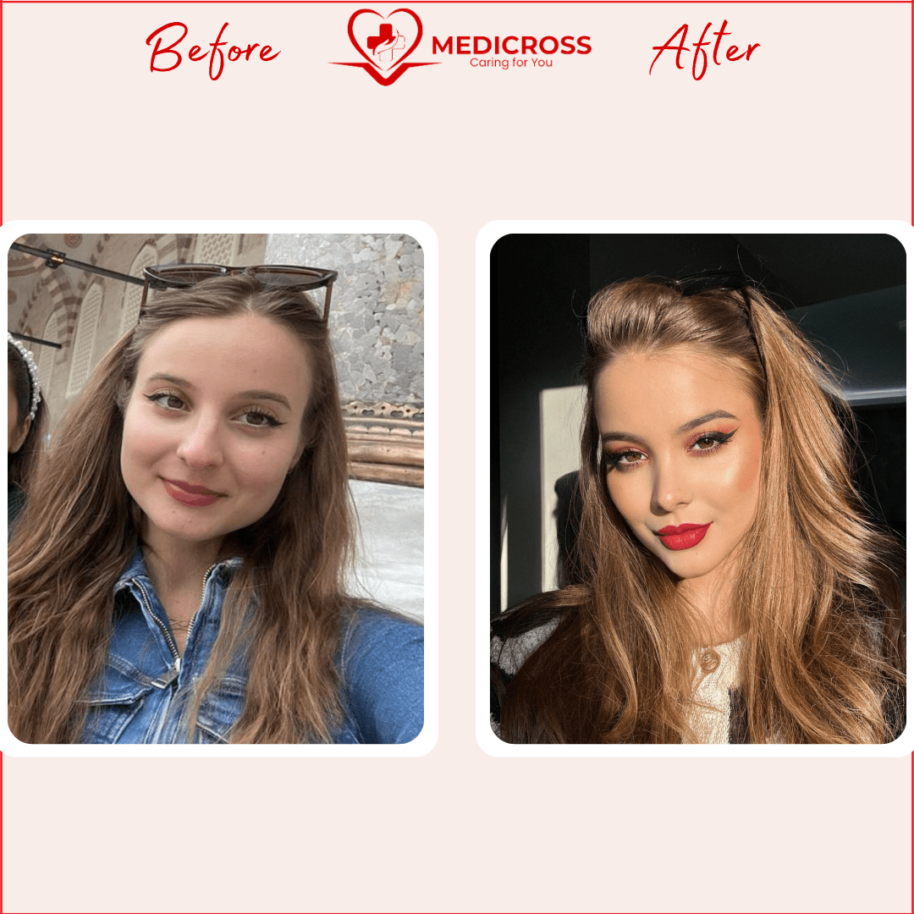
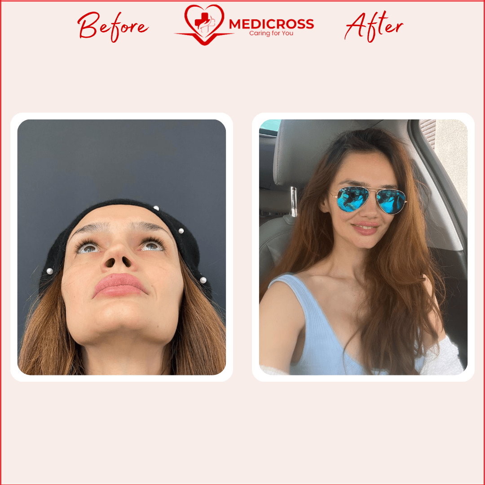

Ce este operația de rinoplastie?
Operația de remodelare a nasului (rinoplastia) este probabil cea mai frecvent practicată intervenție chirurgicală estetică. Chirurgul remodelează nasul pentru a schimba unghiul dintre buza superioară și nas, pentru a modifica aspectul nărilor, pentru a micșora dimensiunea nasului sau pentru a elimina o denivelare pe punte.
Indiferent de motivul principal al procedurii, scopul rinoplastiei este întotdeauna obținerea unui rezultat cât mai echilibrat și cât mai natural posibil, păstrând sau îmbunătățind în același timp funcția nazală.

Câte tipuri de operații de rinoplastie există?
Rinoplastie închisă
Procedura este efectuată sub anestezie generală și constă în efectuarea a două incizii în partea interioară a nărilor. Prin aceste incizii medicul are acces la structura nasului, modificând astfel forma și dimensiunile acestuia conform fizionomiei pacientului. Rinoplastia închisă este o operație care necesită mult mai multă experiență și expertiză — alegerea medicului este foarte importantă pentru o intervenție de succes.
Rinoplastie deschisă
Față de rinoplastia închisă, rinoplastia deschisă prezintă și o incizie la nivelul columelei (zona ce separă nările). Pielea este decolată, cartilajul și osul sunt corectate, apoi se execută sutura. Medicul are o vizibilitate mai bună asupra structurilor nasului, iar incizia la columelă se vindecă foarte repede — la 3 luni după operație este foarte greu detectabilă.
Rinoplastia secundară
Este operația care se execută după o primă rinoplastie ale cărei rezultate nu au fost mulțumitoare. În afara dificultăților tehnice, implică și o dedicare deosebită din partea chirurgului pentru a câștiga încrederea unui pacient deseori traumatizat în urma unei intervenții nereușite.
Rinoplastie nechirurgicală
Remodelarea nasului se poate face și prin metode nechirurgicale, prin injectarea substanțelor de umplere în țesuturile moi. Este o procedură ce nu necesită anestezie și poate netezi, umple și estompa neregularitățile nasului. Rezultatele nu au însă caracter permanent.
Care sunt beneficiile rinoplastiei estetice?
Rinoplastia are beneficii concrete, vizibile după câteva zile de la operație. Aspectul final și rezultatele procedurii pot fi observate pe deplin după 12 luni, odată ce corpul se vindecă.
- Mărește sau micșorează dimensiunea nasului
- Reface forma nărilor
- Reduce vârful nazal
- Reduce puntea (nasul cârn)
- Îmbunătățește echilibrul și armonia trăsăturilor faciale
- Corectează problemele asociate cu un sept deviat
- Îmbunătățește respirația
- Îndreaptă cocoașa și obține un dors drept sau ușor concav
- Îngustează un vârf lat sau bulbos
- Îndepărtează asimetriile
Beneficiile pe plan medical
În cazul în care un pacient efectuează operația de rinoplastie din motive medicale, precum o deviație de sept sau traumatisme la nivelul septului, beneficiile vor fi mai mult decât evidente.
- Îmbunătățirea respirației
- Reducerea sforăitului
- Mai puține dureri de cap
- Episoade mai puține de sinuzită
- Exercițiile fizice sunt mai tolerabile
- Un somn odihnitor
Cum se desfășoară operația?
Rinoplastia se practică în general sub anestezie generală, dar este posibilă și anestezia locală asociată cu sedare intravenoasă. Inciziile pot fi practicate în interiorul nasului (tehnica închisă), asigurând accesul la cartilajele și oasele nazale care vor fi modelate. Rinoplastia deschisă asigură vizualizarea directă a structurilor osteo-cartilaginoase nazale, dar presupune o mică incizie externă la nivelul columelei.
Remodelarea nasului presupune fie reducerea anumitor structuri ale acestuia, fie augmentarea lor prin adăugarea de grefoane cartilaginoase sau osoase. Deviația septului nazal se corectează fie prin excizia porțiunii deformate, fie prin modelarea acesteia. După obținerea formei dorite, inciziile se suturează.
Operația durează în medie 1-2 ore, iar perioada de spitalizare este de o noapte, cu externare a doua zi.
Recuperarea postoperatorie
Postoperator, oasele și cartilajele vor fi susținute în noua poziție cu ajutorul unei atele aplicate pe fața externă a piramidei nazale. Atela și tuburile de silicon care susțin egalitatea nărilor vor fi îndepărtate la 5-6 zile postoperator.
Rinoplastia determină un disconfort mic sau moderat, care poate fi controlat prin medicație antialgică obișnuită. În următoarele 3-6 luni veți remarca îmbunătățirea progresivă a formei și conturului nazal și dispariția edemului.
Medicul va oferi instrucțiuni specifice legate de îngrijirea zonei și un tratament medicamentos postoperator. Expunerea la soare, purtarea ochelarilor și efortul fizic intens vor fi evitate după operație.
Servicii complementare rinoplastiei
Pentru a veni în întâmpinarea nevoilor dumneavoastră, oferim o gamă largă de servicii complementare rinoplastiei:
Septoplastie
Corectează deviația de sept, o condiție comună care poate cauza dificultăți de respirație, sângerări nazale frecvente și alte simptome neplăcute.
Operația endoscopică a sinusurilor
Utilizând tehnologie endoscopică minim invazivă, această intervenție ameliorează simptomele cronice ale sinuzitei — congestia nazală, durerile de cap și presiunea facială.
Turbinectomie
Implică micșorarea cornetelor nazale, structuri osoase care pot deveni inflamate și pot obstrucționa fluxul de aer. Recomandată pentru a îmbunătăți respirația.
Adenoidectomie
Indicată în special copiilor, presupune îndepărtarea adenoidelor („polipilor”) care pot bloca căile respiratorii.
Rezultate — înainte și după








De ce să alegi Tratamente Turcia by Medicross
- Abordare personalizată, adaptată la nevoi diferite și unice pentru fiecare pacient.
- Suntem asociați cu spitale din Turcia, Istanbul, cu experiență îndelungată.
- Intervențiile medicale sunt realizate în centre dedicate.
- Împreună cu partenerii noștri am creat un întreg program dedicat pacienților.
- Asigurăm translator, fiind conștienți că pacienții noștri au nevoie de comunicare permanentă.
- Echipa medicală va fi în contact cu tine oricând ai nevoie, atât înainte, cât și după operație, pe termen lung.